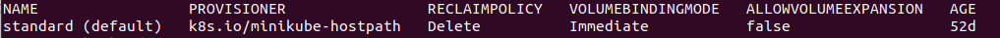
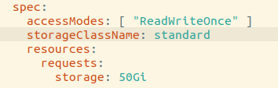

在AIOps挑战赛学习了智能运维相关的内容，尝试在Service Mesh环境下模拟配置挑战赛环境
使用minikube搭建微服务网络，通过Istio进行监控，分别通过Prometheus、Fluented以及Jaeger获取服务的指标、日志和调用链信息，并汇总到Elasticsearch用作后续分析
后续发现使用全栈的Elastic解决方案能够不依赖istio实现轻松可靠的在Elasticseach中汇总指标、日志和性能追踪，于是又尝试了如下的解决方案https://www.qikqiak.com/post/k8s-monitor-use-elastic-stack-1/
除此之外，KubeSphere汇总了包括运维数据获取等的一系列解决方案，可以非常方便地安装与管理用户最常用的云原生工具
Istio 环境配置
参考教程配置环境https://istio.io/latest/docs/setup/getting-started/
配置流程
参见官网demo https://istio.io/latest/docs/setup/getting-started/
安装minikube https://minikube.sigs.k8s.io/docs/start/#install-a-hypervisor
1 | minikube start |
1 | istioctl install --set profile=demo -y |
1 | kubectl exec "$(kubectl get pod -l app=ratings -o jsonpath='{.items[0].metadata.name}')" -c ratings -- curl -sS productpage:9080/productpage | grep -o "<title>.*</title>" |
1 | //创建一个Istio Ingress Gateway，该网关将路径映射到网格边缘处的路线 |
1 | export INGRESS_PORT=$(kubectl -n istio-system get service istio-ingressgateway -o jsonpath='{.spec.ports[?(@.name=="http2")].nodePort}') |
1 | minikube tunnel //在新的终端窗口中运行以下命令，以启动将流量发送到Istio Ingress网关的Minikube隧道 |
1 | export GATEWAY_URL=$INGRESS_HOST:$INGRESS_PORT |
1 | kubectl apply -f samples/addons |
kubernets相关命令
minikube是本地的Kubernetes，致力于使Kubernetes易于学习和开发
https://minikube.sigs.k8s.io/docs/start/#install-a-hypervisor
https://istio.io/latest/docs/setup/platform-setup/minikube/
1 | minikube start --driver=docker |
1 | kubectl get po -A |
1 | minikube pause |
1 | minikube stop |
1 | minikube delete --all |
1 | kubectl get po -A //查看所有pods，第一列为命名空間 |
1 | kubectl get deployment -n istio-system |
1 | kubectl delete pod prometheus -n istio-system //从命名空间istio-system删除prometheus |
Istio相关命令
https://www.servicemesher.com/istio-handbook/practice/setup-istio.html
https://istio.io/latest/docs/setup/install/istioctl/
1 | istioctl install |
1 | istioctl install --set profile=demo |
1 | istioctl x uninstall --purge |
可选--purge标志将删除所有Istio资源，包括可能与其他Istio控制平面共享的群集范围的资源。
1 | istioctl dashboard //查看可用的仪表盘 |
运维环境搭建
将指标、日志以及调用链数据集中到elasticsearch以便后续分析
https://kubernetes.io/zh/docs/tasks/configure-pod-container/pull-image-private-registry/
环境搭建速度较慢时考虑使用本地镜像
Prometheus配置
https://www.servicemesher.com/istio-handbook/practice/prometheus.html
istio的sample/addons目录提供了prometheus的yaml文件，之前通过kubectl apply -f samples/addons已安装，可以直接istioctl dashboard prometheus进行观察
1 | //进入prometheus所在pod |
找到配置文件prometheus.yml并打开，我的在/etc/config/prometheus.yml并修改
1 | //也可以通过修改 Prometheus 的 ConfigMap 对其配置进行如下修改 |
修改完成后保存，需要给 Prometheus 加上 –web.enable-lifecycle 启动参数来支持热更新（可能默认支持）
这些配置参数在prometheus.yaml中已经定义
1 | kubectl edit deployment prometheus -n istio-system |
然后再调用 Prometheus 的 HTTP API 即可更新配置：
1 | curl -X POST http://<Prometheus URL>:9090/-/reload |
1 | istioctl dashboard prometheus |
https://www.elastic.co/cn/what-is/prometheus-monitoring
将prometheus数据导出到elasticsearch
EFK配置
https://www.servicemesher.com/istio-handbook/practice/efk.html
1 | # 参考efk.yaml |
1 | //具体设置参数的位置需要参考demo.yaml，1.10版本默认使用meshConfig.accessLogFile为/dev/stdout |
以下通过部署 sleep 示例应用程序来测试日志采集过程
1 | kubectl apply -f samples/sleep/sleep.yaml |
1 | kubectl logs -l app=sleep -c istio-proxy //查看应用日志 |
https://www.servicemesher.com/istio-handbook/practice/efk.html
参考上文构建EFK的YAML文件
1 | kubectl apply -f samples/efk.yaml |
执行命令产生访问日志：
1
kubectl exec -it $(kubectl get pod -l app=sleep -o jsonpath='{.items[0].metadata.name}') -c sleep -- curl -v httpbin:8000/status/418
如果你已经按照本书部署了
Bookinfo示例，你也可以直接通过浏览器访问 /productpage 页面也可以产生访问日志。设置 Kibana 的端口转发：
1
kubectl -n logging port-forward $(kubectl -n logging get pod -l app=kibana -o jsonpath='{.items[0].metadata.name}') 5601:5601 &
- 此命令将 Kibaba Pod 的
5601端口转发到localhost:5601，&代表后台运行
- 此命令将 Kibaba Pod 的
后续需要对 Fluentd 进行细致的配置。如果用于生产环境，可以前往 Kubernetes 官方 github 仓库找到完整的 EFK 配置来进行部署：
https://github.com/kubernetes/kubernetes/tree/master/cluster/addons/fluentd-elasticsearch
Jaeger配置
https://www.servicemesher.com/istio-handbook/practice/jaeger.html
1 | kubectl apply -f samples/addons/jaeger.yaml |
1 | istioctl dashboard jaeger |
可以在jaeger.yaml配置文件中修改参数
将调用链数据持久化存储 https://www.jaegertracing.io/docs/1.23/operator/#production-strategy
#TODO
Jaeger Collector默认采用直接写入存储服务的方式，大规模的使用场景下建议使用 Kafka 作为中间缓存区。
Istio构架
https://www.servicemesher.com/istio-handbook/concepts/basic.html
https://zhuanlan.zhihu.com/p/145544378
服务网格是一个基础设施层，用于处理服务间通信。云原生应用有着复杂的服务拓扑，服务网格保证请求在这些拓扑中可靠地穿梭。在实际应用当中，服务网格通常是由一系列轻量级的网络代理组成的，它们与应用程序部署在一起，但对应用程序透明。
Istio 服务网格在逻辑上分为控制平面和数据平面两部分。其中，控制平面 Pilot 负责管理和配置代理来路由流量，并配置 Mixer 以实施策略和收集遥测数据；数据平面由一组以 Sidecar 方式部署的智能代理（Envoy）组成，这些代理可以调节和控制微服务及 Mixer 之间所有的网络通信。
控制平面的特点：
- 不直接解析数据包
- 与控制平面中的代理通信，下发策略和配置
- 负责网络行为的可视化
- 通常提供 API 或者命令行工具可用于配置版本化管理，便于持续集成和部署
数据平面的特点：
- 通常是按照无状态目标设计的，但实际上为了提高流量转发性能，需要缓存一些数据
- 直接处理入站和出站数据包，转发、路由、健康检查、负载均衡、认证、鉴权、产生监控数据等
- 对应用来说透明，即可以做到无感知部署
优点
- 屏蔽分布式系统通信的复杂性(负载均衡、服务发现、认证授权、监控追踪、流量控制等等)，服务只用关注业务逻辑；
- 真正的语言无关，服务可以用任何语言编写，只需和Service Mesh通信即可；
- 对应用透明，Service Mesh组件可以单独升级；
挑战
- Service Mesh组件以代理模式计算并转发请求，一定程度上会降低通信系统性能，并增加系统资源开销；
- Service Mesh组件接管了网络流量，因此服务的整体稳定性依赖于Service Mesh，同时额外引入的大量Service Mesh服务实例的运维和管理也是一个挑战；
Kubernetes
https://jimmysong.io/kubernetes-handbook/concepts/
微服务
https://zhuanlan.zhihu.com/p/61901608
- 不同服务间直接进行通信
- 加入对网络传输问题的处理逻辑
- 使用TCP协议处理网络传输问题
- 第一代微服务：分布式系统发展带来的新需求（分布式系统的通用语义），如熔断策略、负载均衡、服务发现、认证和授权、quota限制、trace和监控等
- 第二代微服务：面向微服务架构的开发框架出现
- 第一代 Service Mesh：Linkerd，Envoy，NginxMesh为代表的代理模式（边车模式）将分布式服务的通信抽象为单独一层，在这一层中实现负载均衡、服务发现、认证授权、监控追踪、流量控制等分布式系统所需要的功能，作为一个和服务对等的代理服务，和服务部署在一起，接管服务的流量，通过代理之间的通信间接完成服务之间的通信请求，从而保证微服务语言无关的特性，解决版本兼容问题，同时避免开发者掌握管理复杂框架本身花费的时间精力
- 第二代 Service Mesh：以 Istio 为代表，提供统一的上层运维入口，演化出了集中式的控制面板，所有的单机代理组件通过和控制面板交互进行网络拓扑策略的更新和单机数据的汇报
使用 Elastic 技术栈构建 K8S 全栈监控
https://www.qikqiak.com/post/k8s-monitor-use-elastic-stack-1/
https://www.qikqiak.com/post/k8s-monitor-use-elastic-stack-2/
https://www.qikqiak.com/post/k8s-monitor-use-elastic-stack-3/
https://www.qikqiak.com/post/k8s-monitor-use-elastic-stack-4/
在安装 ElasticSearch数据节点时，storageClass需要绑定现有的storageclass name
1 | kubectl get sc # 获取storageclass |

修改yaml文件，将storageClassName改为查询到的storageclass name

1 | Changed password for user apm_system |
注意将elastic用户名和密码添加到Kubernetes的Secret 对象中一步需要将password改为之前生成的最后一个密码，即上面的zjA9fYQfUgwgmJn4shv5
1 | kubectl logs -f -n elastic $(kubectl get pods -n elastic | grep kibana | sed -n 1p | awk '{print $1}') | grep "Status changed from yellow to green" |
获取elastic service的CLUSTER-IP，通过CLUSTER-IP:5601访问Kibana可视化界面，登录使用elastic作为用户名和之前获取的zjA9fYQfUgwgmJn4shv5作为密码
- tips：pod创建出现ImagePullBackOff时，很可能时镜像拉不下来，可以考虑在dockerhub搜索对于的镜像，拉下来后使用
docker tag命令修改标签，或者直接在yaml里直接改image对于的地址